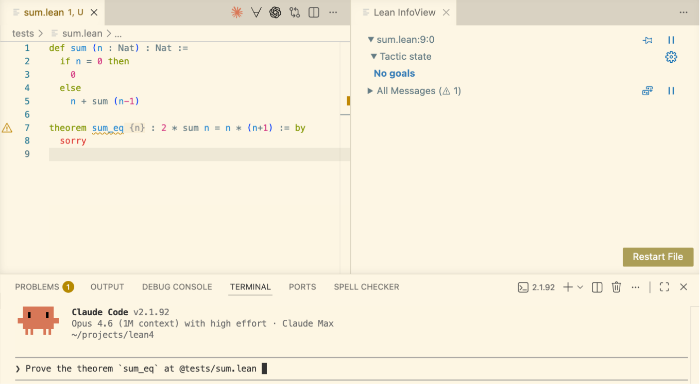
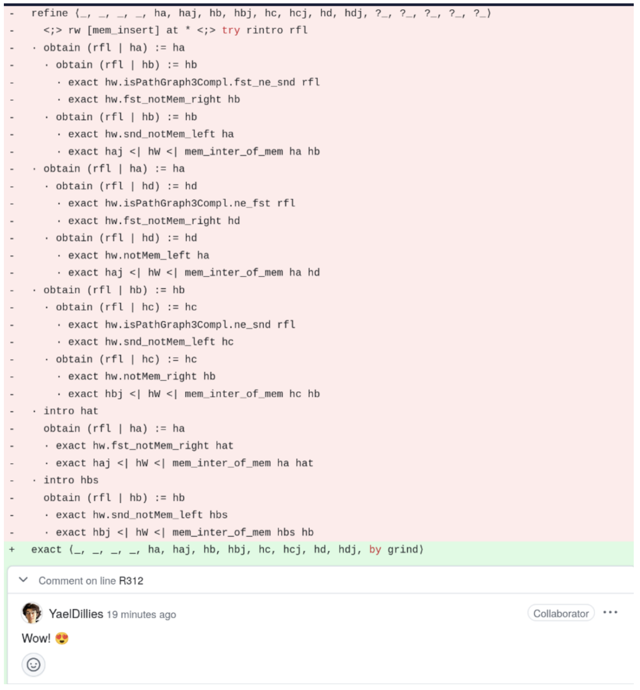

Lean: Machine-Checked Mathematics and AI Collaboration
zlib in Lean
A general-purpose AI converted zlib (a C compression library) to Lean, passed the test suite, and proved the code correct.
theorem zlib_decompressSingle_compress (data : ByteArray) (level : UInt8)
(hsize : data.size < 1024 * 1024 * 1024) :
ZlibDecode.decompressSingle (ZlibEncode.compress data level) = .ok data
Round-trip correctness, every compression level, machine-checked. lean-zip
What is Lean?
A programming language and a proof assistant
Same language for code and proofs.
Lean is implemented in Lean. Very extensible.
Lean is scalable.
Small trusted kernel. Proofs can be exported and independently checked.
Programming and Theorem Proving in Lean
"You have written my favorite computer game" — Kevin Buzzard
def reverse : List α → List α
| [] => []
| x :: xs => reverse xs ++ [x]
theorem reverse_append (xs ys : List α)
: reverse (xs ++ ys) = reverse ys ++ reverse xs := by
induction xs with
| nil => simp [reverse]
| cons x xs ih => simp [reverse, ih]
#eval reverse [1, 2, 3]
The "game board": you see goals and hypotheses, then apply moves (tactics).
Each tactic transforms the goal until nothing remains. The kernel checks the final proof term.
The Kernel Catches Mistakes
example : reverse [1, 2, 3] = [1, 2, 3] := by simp [reverse]
You don't need to trust me, or my automation. You only need to trust the small kernel.
Incorrect proofs are rejected.
Multiple Independent Kernels
arena.lean-lang.org hosts independent kernel implementations.
-
The reference kernel — C++.
-
nanoda— Rust. -
lean4lean— Lean. -
nanobruijn— Rust. -
Many others.
Anyone can build a kernel and submit it.
Disagreement between independent kernels exposes bugs that neither would catch alone.
The State of Lean
250,000+ unique installations: VS Code (143K) + Open VSX (107K).
9,000+ GitHub repositories depending on Lean.
Industry: AWS, Google, Microsoft, Mistral, Nethermind, Galois, others.
"Lean has become the de facto choice for AI-based systems of mathematical reasoning." — ACM SIGPLAN Award
Lean as an IDE
Real-time feedback: errors, goals, and hints as you type. The IDE is where we collaborate with AI now.

AI Proves the Theorem
AI found the proof and explained its strategy in natural language:

Interactive Walkthrough: Sum Formula
def sum (n : Nat) : Nat :=
if n = 0 then
0
else
n + sum (n-1)
theorem sum_eq : 2 * sum n = n * (n+1) := by
induction n with
| zero => simp [sum]
| succ n ih =>
unfold sum; simp
rw [Nat.mul_add, ih, ← Nat.add_mul]
rw [Nat.add_comm 2 n, Nat.mul_comm]
Mathlib: 2.2M+ Lines of Formalized Mathematics
-
270,000+ formalized theorems.
-
750+ contributors.
-
2.2M+ lines of Lean.
-
1,500+ type classes and 20,000+ instances.
-
No competing proof assistant has this engagement.

The Liquid Tensor Experiment
In 2020, Peter Scholze posed a formalization challenge.
"I spent much of 2019 obsessed with the proof of this theorem, almost getting crazy over it. I still have some small lingering doubts." — Peter Scholze
Johan Commelin led a team that verified the proof, with only minor corrections.
They verified and simplified it without fully understanding the proof. Lean was a guide.
"The Lean Proof Assistant was really that: an assistant in navigating through the thick jungle that this proof is." — Peter Scholze

Lean Is Taking Mathematics by Storm
Six Fields Medalists engaged: Tao, Scholze, Viazovska, Gowers, Hairer, Freedman.
-
Carleson's Theorem (completed) — van Doorn
-
Liquid Tensor Experiment (completed) — Commelin
-
Equational Theories Project, Tao (completed)
-
Sphere Packing — Birkbeck, Hariharan, Lee, Ma, Mehta, Viazovska
-
Fermat's Last Theorem — Buzzard
-
Inter-Universal Teichmüller Theory — Mochizuki
At this scale, mathematics needs build systems, dependency graphs, code review, release engineering, and a precise medium for communication.
Reading vs Writing Formal Math
-
It is easier to read formal math than write it.
-
Formal math is easier to read than LaTeX.
-
You can click through, inspect definitions, check types.
-
AI can explain formal proofs and is making the writing part easier.

Verso: Written in Lean. Checked by Lean.
-
These slides are written in Verso.
-
Every code example you have seen — and will see — is type-checked by Lean as part of the build.
-
Verso is a domain-specific language embedded in Lean.
-
lean-lang.org is written in Verso.
-
My homepage is written in Verso.
-
Future math papers will embed type-checked Lean code.
-
Built by David Thrane Christiansen at the Lean FRO.

Verso Blueprint: A Map for Large Formalizations
-
Massot's Lean Blueprints have been widely adopted in the Lean community.
-
Verso Blueprint is the next generation.
-
Large projects like FLT (50+ contributors) and sphere packing need more than proofs. They need a map.
-
It tracks definitions, lemmas, and dependencies.
-
The blueprint is a Lean document with inline code that is type-checked.
-
When AI generates 200,000+ lines of formalization, humans need tools to visualize and understand what was built.
-
Built by Emilio Jesús Gallego Arias at the Lean FRO.
-
Emilio ported major projects onto it: FLT, Carleson, Sphere Packing, Noperthedron.
Verso Blueprint: TeX and Lean in One Document

Verso Blueprint: Dependency Graph

Lean Verbose
Natural language tactics to teach mathematics using Lean 4.
Playing the Lean game using mouse clicks and natural language.
Lean Verbose is implemented in Lean by Patrick Massot.

Software Verification
Lean is not only for mathematics.
Cedar (AWS): Verified Authorization
Cedar — open-source authorization policy language. Used by AWS Verified Permissions and AWS Verified Access.
Cedar spec: the model is written in Lean.
Three examples of verified components: evaluator, authorizer, validator.
-
forbid_trumps_permit— if any forbid policy is satisfied, the request is denied. -
allowed_only_if_explicitly_permitted— a request is allowed only if at least one permit policy is satisfied. -
typecheck_is_sound— if the validator accepts a policy, evaluation produces a boolean.

Cedar — The Engineering Story
Executable Lean model alongside Rust production code. Lean model ~10× smaller than Rust.

-
~100M differential random tests nightly. Lean: 5 μs/test. Rust: 7 μs/test.
-
Release gate: no Cedar version ships unless model, proofs, and differential tests are current.
"We've found Lean to be a great tool for verified software development." — Emina Torlak
SymCrypt (Microsoft): Verified Cryptography

SymCrypt — Microsoft's core cryptographic library, rewritten in Rust.
Verification pipeline: Charon → Aeneas → Lean.
Aeneas: translates safe Rust to pure functional Lean code. The bridge that makes Rust verification in Lean practical.
SymCrypt — Verifying Code as Engineers Write It
They verify the Rust code as written by software engineers. No special verification-friendly subset.
Code is evolving: new optimizations for specific hardware (AVX-512, Arm NEON, …). Proofs adapt to rewrites.
"We are verifying code faster than we can write it." — Son Ho, SymCrypt, Microsoft
The proof maintenance burden is real and unavoidable. The fact that it stays manageable is the point.
jxl-rs (Google): Panic-Freedom via Aeneas + grind
Jonathan Protzenko (Google) verified that an unchecked_get in jxl-rs — a Rust rewrite of the JPEG-XL codec — is safe. The array index is always within bounds.
Pipeline: Charon → Aeneas → Lean. Tactics: scalar_tac, bv_tac, grind.
"with suitable annotations and judicious usage of
grind, I believe those proofs occupy a sweet spot: they enjoy a high degree of automation, relying on SMT-like tactics (grind), or domain-specific tactics (bv_tac), while still reaping the benefits of interactivity." — Jonathan Protzenko, May 2026
Aeneas: Son Ho, Aymeric Fromherz, Guillaume Boisseau.
Move Borrow Checker: The Problem
Ilya Sergey (VERSE lab) formalized and verified Move's borrow checker in Lean. 39,000 lines of mechanized metatheory in 27 working days, using Claude as an AI coding assistant.
Move: smart contract language for the Sui and Aptos blockchains. Rust-like ownership discipline. References are access paths rooted in local variables. No lifetime annotations.
The borrow checker: tracks reachability between references using regular expressions over field paths.
Move Borrow Checker: What Was Proved
Formalized in Lean:
-
Relational type system encoding
-
Executable algorithmic type checker
-
Soundness proof: the algorithmic checker is sound w.r.t. the relational rules
-
Runtime semantics as a definitional interpreter
-
Type soundness: progress + preservation. Any function accepted by the type checker never reaches a preventable error across all execution paths.
Human insight still needed for novel proof strategies (e.g., weakening lemmas, inter-procedural reasoning for function calls).
27 working days. Estimated 5-6 months without AI. Second largest PL metatheory mechanization in Lean, and very likely the largest accomplished predominantly using AI.
Kraken (Google): x64 Semantics in Lean
Kraken is an x64 model written in Lean.
Intended for verifying sequential software that performs computations using common registers and memory.
Project started after the Lean@Google Hackathon in December 2025.
CSLib: A Mathlib for Computer Science
CSLib aims to be a foundation for teaching, research, and new verification efforts, including AI-assisted.

Steering committee: Clark Barrett, Swarat Chaudhuri, Jim Grundy, Pushmeet Kohli, Leo de Moura, Fabrizio Montesi.
Signal Shot
Signal Shot is a public moonshot to verify the Signal protocol and its Rust implementation using Lean.
It is a joint effort of Signal (Rolfe Schmidt), the Beneficial AI Foundation (Max Tegmark), and the Lean FRO.
The pieces:
-
Aeneas,
-
Mathlib and CSLib,
-
Symbolic proof automation (
grind) and scalable verification generation (SymM), -
and AI.
Proof Automation
Do We Still Need Proof Automation?
"I thought AI would prove all theorems for us now."
-
Tactics are like game moves.
-
Better tactics = shorter proofs.
-
Better tactics = more powerful AI.
-
Compact proofs = better training data = better AI provers.

What Is grind?
New proof automation, shipped in Lean v4.22. Kim Morrison and me.
A virtual whiteboard, inspired by modern SMT solvers.
-
Writes facts on the board. Merges equivalent terms.
-
Cooperating engines: congruence closure, E-matching, constraint propagation, guided case analysis.
-
Satellite theory solvers: cutsat (linear integer arithmetic), commutative rings (Gröbner), linarith, AC.
-
Native to dependent type theory. No translation to FOL.
-
Produces ordinary Lean proof terms. Kernel-checkable.
grind — Theory Combination
example [CommRing α] [NoNatZeroDivisors α]
(a b c : α) (f : α → Nat)
: a + b + c = 3 →
a^2 + b^2 + c^2 = 5 →
a^3 + b^3 + c^3 = 7 →
f (a^4 + b^4) + f (9 - c^4) ≠ 1 := by
grind
Three solvers meet at the E-graph:
-
Ring solver derives
a^4 + b^4 = 9 - c^4. -
Congruence closure lifts it to
f (a^4 + b^4) = f (9 - c^4). -
Linear integer arithmetic closes
2 * f (9 - c^4) ≠ 1.
The Nelson-Oppen playbook. Inside dependent type theory. No SMT translation layer.
grind — Typeclass-Parameterized Solvers
Satellite solvers activate automatically when the type classes are present.
-
cutsat—ToIntclass.Int,Int32,BitVec 64,Fin n. -
Ring —
CommRing,CommSemiring,Field,IsCharP,NoNatZeroDivisors. -
linarith— module over the integers. Preorders, partial, linear orders. -
AC — any associative-commutative operator.
example (x y : Int)
: 27 ≤ 11*x + 13*y → 11*x + 13*y ≤ 45 →
-10 ≤ 7*x - 9*y → 7*x - 9*y ≤ 4 → False := by
grind
-- BitVec 8 is a CommRing of characteristic 256.
-- No bitvector-specific theory needed.
example (x : BitVec 8) : (x - 16) * (x + 16) = x^2 := by
grind
grind — Annotations and E-Matching
Library authors annotate theorems; grind instantiates them by E-matching — pattern matching modulo the E-graph.
-
[grind =]— use the LHS as the E-matching pattern. -
[grind →]— forward reasoning: patterns from hypotheses. -
[grind ←]— backward reasoning: patterns from the conclusion. -
grind_pattern— custom multi-patterns. -
Constraint system on patterns:
guard,check,is_value,is_strict_value.
@[grind =] theorem fg {x} : f (g x) = x := by
unfold f g; omega
example {a b c} : f a = b → a = g c → b = c := by
grind
4,000+ grind uses in Mathlib.
Better Tactics = Better AI
example {α} [CommRing α] [IsCharP α 0] [NoNatZeroDivisors α]
(d t d_inv : α)
(Δ40 : d * (d + t + d * t) = 0)
(Δ41 : d^2 * (d + d * t - 2 * d * t^2 + d * t^4 + d^2 * t^4) = 0)
: d * d_inv = 1 →
t + 2 * t^2 - t^3 - 2 * t^4 + t^5 = 0 := by
grind
Quantum algebra example from "Categories generated by a trivalent vertex" — Morrison, Peters, Snyder.
When grind closes a goal in one step instead of fifty, the AI search tree shrinks dramatically.
Tao on grind
"I have been experimenting recently with the new tactic
grindin Lean, which is a powerful tool inspired by 'good old-fashioned AI' such as satisfiability modulo theories (SMT) solvers... When I applygrindto a given subgoal, it can report a success within seconds... But, importantly, when this does not work, I quickly get agrindfailed message." — Terence Tao
AI
Accelerating formal verification.
"Vibe Proving"
So many people are choosing Lean that even casual users are proving theorems with ChatGPT.

"The bottleneck for using AI to create strategies and make conjectures is we have to rely on human experts and the test of time to validate whether something is plausible or not." — Terence Tao, Dwarkesh Patel interview
Radix: 10 AI Agents, One Weekend
10 AI agents built a verified embedded DSL with proved optimizations in a single weekend.
-
52 theorems.
-
5 verified compiler optimizations.
-
Determinism, type safety, memory safety.
-
Interpreter correctness — sound and complete.
-
27 modules, ~7,400 lines of Lean.
-
I did not touch the code. Zero lines. Full agent autonomy.
AI Changed How I Work
AI is not just changing who uses Lean. It changed how I work.
Kim Morrison (Lean FRO) showed me a major refactoring step: more than 10,000 lines changed across Mathlib, implemented by AI.
Since then, AI has removed the pain of developing software.
I used to believe my superpower was that I could tolerate a lot of pain. That superpower is no longer relevant.
AI now isolates issues, tries new ideas, runs experiments, analyzes performance, and much more.
The Validation Bottleneck
"The bottleneck for using AI to create strategies and make conjectures is we have to rely on human experts and the test of time to validate whether something is plausible or not." — Terence Tao, Dwarkesh Patel interview
Lean automates the validation. That's the unlock.
AI will write proofs. AI will even draft specifications from natural language.
But reading the formal statement and saying "yes, this is what I meant." remains the human job. The formal statement is the trust anchor.
The Kernel as AI Safety Infrastructure
"It's really important with these formal proof assistants that there are no backdoors or exploits you can use to somehow get your certified proof without actually proving it, because reinforcement learning is just so good at finding these backdoors." — Terence Tao
The kernel's soundness is not just a theoretical property. It is AI safety infrastructure.
RL agents will find every shortcut. The kernel is the one thing they can't fake.
Who Watches the Provers? | Comparator | Validating a Lean Proof
International Mathematical Olympiad (IMO)
To date, every AI achieving medal-level IMO performance with formal proofs used Lean.
-
AlphaProof (Google DeepMind) — silver medal, IMO 2024
-
Aristotle (Harmonic) — gold medal, IMO 2025
-
SEED Prover (ByteDance) — silver medal, IMO 2025
AI startups
-
Leanstral (Mistral): the first open-source code agent designed for Lean 4.
-
Axiom: solved 12/12 problems on Putnam 2025.
-
DeepSeek Prover-V2: 88.9% on miniF2F. Open-source, 671B parameters.
-
Harmonic: Built the Aristotle AI — gold medal, IMO 2025.

The Lean FRO
Nonprofit. 20 engineers. Open source. Controlled by no single company.
Sebastian Ullrich and I launched it in August 2023.
29 releases and 8,500+ pull requests merged since launch.
Lean is not a research project anymore. We run the Lean FRO as a startup.
Conclusion
I opened this talk with something unexpected: a general-purpose AI converted a production C library to Lean and proved the Lean version correct. A year ago, no one thought that was possible yet.
“It's quite possible at the high school level... that you could get involved in a math project and actually make a real contribution because of all these AI tools, Lean, and everything else.” — Terence Tao, Dwarkesh Patel interview
Formalization isn't just about proving. It's about understanding, collaborating, and building trust at a scale beyond our cognitive abilities.
The entire discipline thrives when no one has to “take it on faith.”
AI changes how we build proof assistants. It does not change what makes them good.
lean-lang.org | live.lean-lang.org | Lean Zulip | Reference Manual